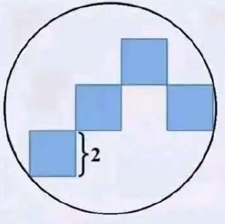
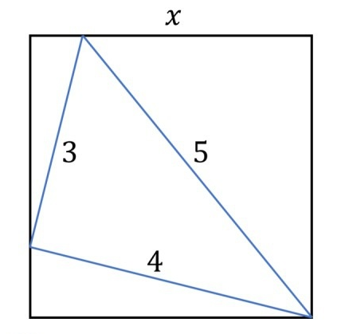
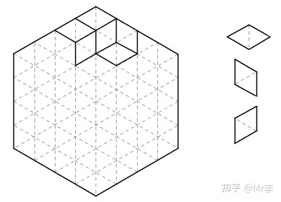
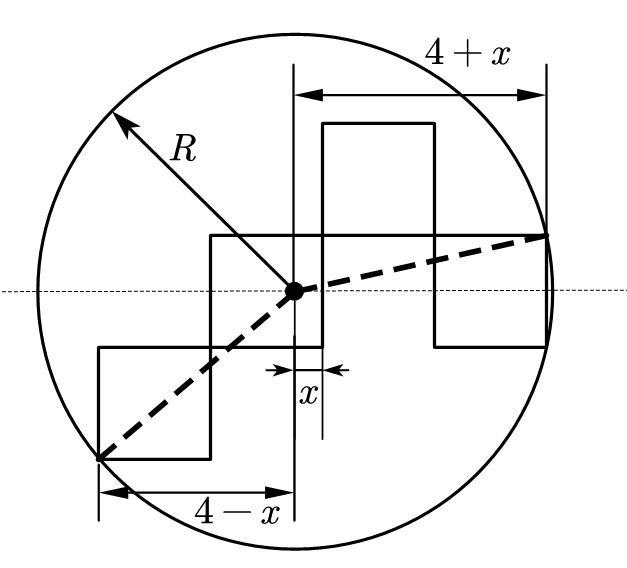
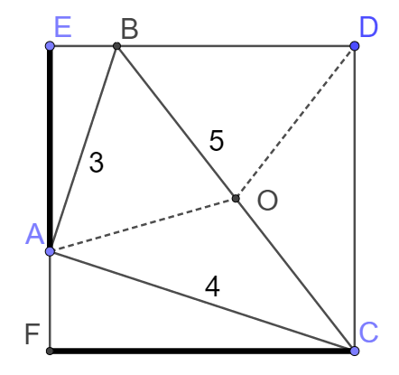
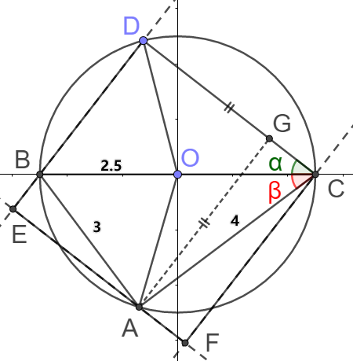
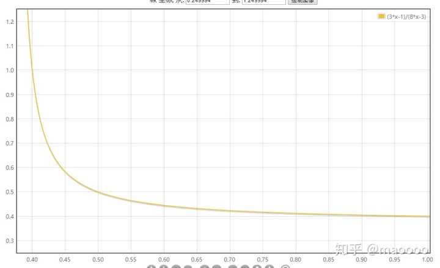
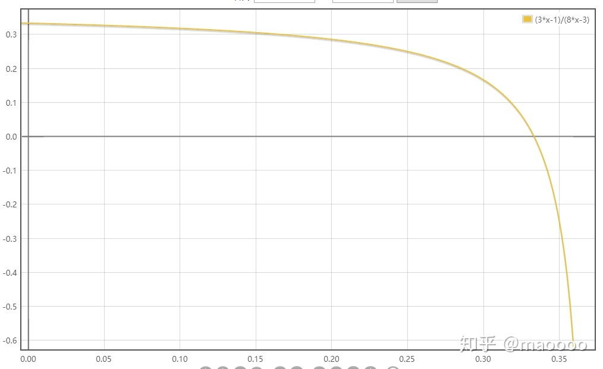
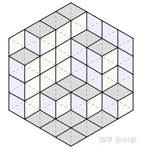

数学妙题（1）
1.包围4个正方形的圆的半径是多少？（这题初中高中都可解。答案显然不是 .）

2.三角形被正方形包围，求

3.假设两个人，一男一女，他俩玩一个游戏：两人同时出一个硬币（两人可以自己决定出示正面或反面），如果都是正面，女人给男人3块钱，如果都是反面，女人给男人1块钱，如果一正一反，则男人给女人2块钱。问最后双方收益是多少。（这个问题没有想象得那么简单）
4.问题：下图是由一个个小三角形组成的正六边形棋盘，现在请你用右边的三种（仅朝向不同的）菱形把整个棋盘全部摆满（图中只摆了其中一部分）。证明一定存在一种解，使得摆满整个棋盘后所使用的每种菱形数量相同。（证法很简单很显然，需要转换视角）

请多思考一会儿，再看答案。
1
解1：本质是三点确定一个圆，建立直角坐标系，设定圆的一般方程并用待定系数法求出方程，化为标准形式即可得到半径。
解2：

，解得， .
2

有时候适当引入对称性，会带来极大的便利。我们观察到图中有两个直角三角形： ，并且它们共用同一条斜边 。于是马上想到“直角三角形斜边中线等于斜边一半”，作出 的中点，连接得到中线 ，发现到 点距离相等的点共有 这四个之多。看来点 具有特殊地位，于是我们以 为半径作圆， 均在圆上。

下面建直角系，由于有一个圆，就以其直径作为 轴。考虑各个点的坐标， 坐标显然， 点纵坐标为 ，代入圆方程并取第三象限上的点即可得到坐标。于是三角形上的点 都是定点。但是 点的位置尚不确定，它正是解题的关键，因为一旦点 的位置确定，马上可以过 作 ，过 作 ，则正方形所有点均可确定，并且题目所求的 则是 的长度。
下面我们来找点 的位置。由于 固定在圆上，则它只有一个自由度，只需要设定一个未知量即可代表其位置，这里我选择用 的斜率倒数 来代表其位置，设 。于是可以写出点 的坐标（是 的函数）。另外为了使矩形 是一个正方形，我们需要对 的取值做出限制。考虑 到 的距离等于正方形的边长等于 ，求出满足这个条件的 即可得到答案。
当然，一道简洁的题做成这样未必也太麻烦了。我们来看看怎么样简化上面的解答过程。事实上， 是和图中的角度 直接对应的。而 到 的距离 等于 ，而 等于 ，由两者相等得：，于是 ，.
假如我直接告诉你作 到 的距离，然后列出上面这个式子得出答案，那你肯定觉得这太不可思议了我是怎么想到这一步的。但是这个思路并不是凭空想到的，而是不断试探找到一条可以通向结果的路，最后再对其简化得到的。（顺带一提，这种类型的题目称为“隐圆”问题）
另外这道题也有其它解法，比如相似三角形：设 ，有 ，解方程即可。这个思路与第一种的恰恰相反，第一种想方设法增加条件，而这种找到重要的条件，抓主要矛盾。如果你还找到了其他好的解法，欢迎投稿。
3
作者：maoooo - 知乎
乍一看貌似五五开嘛，不输不赢。男人的期望是： 块钱，女人的期望是： 块钱。
然而仔细想想，上面计算的时候是默认正反各50%概率的，但是俩人都是可以按照自己意愿来决定出的是正面还是反面。关键就在这里。
假设男人出正面的概率是 ，那么反面的概率就是 . 同样设女人的正面概率是 ，则反面的概率是.
先看男人的期望。两人出正面赢3块+两人出反面赢1块:
再看女人的期望。两人一正一反赢2块：
然后男人的减去女人的就是男人赢钱的期望值：，展开一下合并同类项得到：
到这里我们再重新理解下：x 和 y 分别表示男人与女人的硬币正面的概率，上面那个式子则表示男人赢钱的期望值。然后我们假设存在一种情况，假设女人用某种概率出正面，使男人一直输钱。换句话说就是假设存在一组x与y，使得上面那个式子一直是小于零：
然后解这个不等式。先提取 y 得到： ，移项： ，因为 所以想要把 除到右边需要分类讨论。
第一种情况：
所以不等式变成
右边这个函数你看不出是啥的话没事，我给你画出来。（注意x的取值范围）

所以为了让不等式成立，左边必须小于右边的最小值，而右边又是个减函数，所以当x最大时右边最小，也就是x=1的时候。解得
第二种情况：，
除过去之后不等号得变个方向所以不等式变成
右边还是那个函数，不过这次的定义域不同。

依然是个减函数。所以为了让不等式成立，左边必须大于右边的最大值，而当x最小时右边最大，也就是x=0的时候。解得
总结一下：如果男人出正面的概率大于 ，那么只要女人出正面的概率小于 ，男人就会输钱。如果男人出正面的概率小于 ，那么只要女人出正面的概率大于 ，男人就会输钱。
你有没有发现什么？是的，女人出正面概率的那部分是有交集。当 的时候，无论x取什么值，上边那个期望算出来都是负的，也就是说男人一定会输钱。（还有这种操作.jpg）
按：这实际上是博弈论里的混合策略问题，不能用概率论的思路来考虑。
在实际生活中，在股票市场上，庄家有更复杂的策略可以让你在看似公平的条件下输钱。之前有人说买菜用不到高数，学高数干嘛。确实买菜是用不到高数。但是一个不会高数的人，能做的事也只有买买菜了。
4
把每种菱形涂上一种颜色，整个图形瞬间有了立体感，看上去就成了一个个立方体在墙角堆叠起来的样子。三种菱形分别是从左侧、右侧、上方观察整个立体图形能够看到的面，它们的数目显然应该相等。
